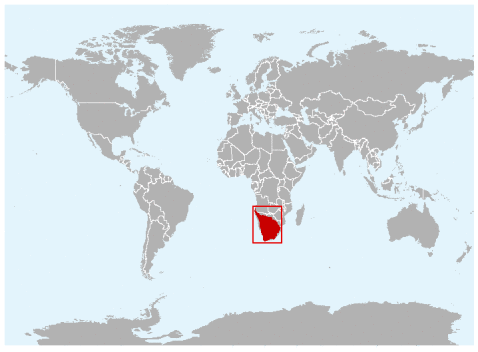

Description of the Cape Fox
Appearance
The Cape fox (Vulpes chama), also called the asse, cama fox or the silver-backed fox, is a small fox, native to southern Africa. It is also called a South African version of a fennec fox due to their big ears. It is the only true fox occurring in sub-Saharan Africa, and it retains primitive characteristics of Vulpes because it diverged early in the evolutionary history of the group.
Vulpes chama is a small-built canid, usually measuring 45 to 62 cm long, not including its tail, which is typically 30 to 40 cm.
The ears are relatively large and sharp, the muzzle is small and pointed. Pelage colour is silvery-gray, tawny at the back of the ears, with white hairs appearing around the side of the pinna in the center. The colour of the neck and sides is lighter, and the underparts are pale tawny to pale buff. The head is dull red and the lower jaw is dark brown. There are white marks on the throat. The legs are more tawny than the rest of the body. The tail is dense and bushy, and can be silvery, pale fawn, buff with brown or black tips, or dull yellow. The tail tip is always black, and there's a dark spot over the caudal gland.
Habitat
Cape fox is the only species in the genus
Behaviour
The Cape fox is nocturnal and most active just before dawn or after dusk; it can be spotted during the early mornings and early evenings. During the day, it typically shelters in burrows underground, holes, hollows, or dense thickets. It is an active digger that will excavate its own burrow, although it generally modifies an abandoned burrow of another species, such as the springhare, to its specific requirements.
 Cape foxes are mostly solitary, and although they form mated pairs, the males and females are often found foraging alone. Occasionally, however, they can gather in loose groups to feed. Although V. chama shows signs of territoriality, such as scent marking, home range overlap does occur.
Cape foxes are mostly solitary, and although they form mated pairs, the males and females are often found foraging alone. Occasionally, however, they can gather in loose groups to feed. Although V. chama shows signs of territoriality, such as scent marking, home range overlap does occur.
Although a normally silent fox, the Cape fox is known to communicate with soft calls, whines or chirps. However, it will utter a loud bark when alarmed. A long-range vocalization of yelps or yapping barks has been described, but Cape foxes apparently do not howl. When in an aggressive mood, the Cape fox is known to growl and spit at its attacker.